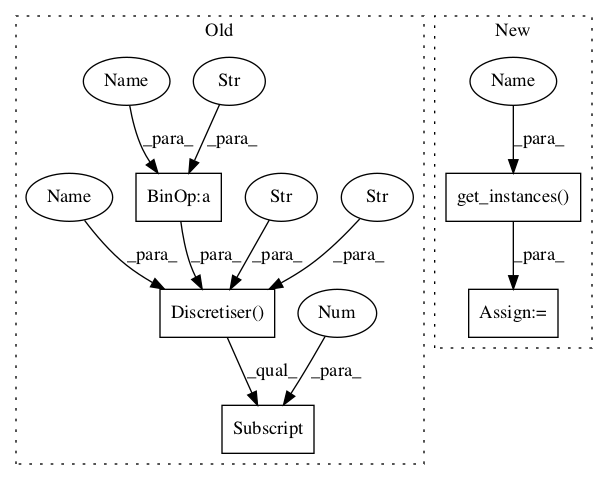

Pattern ID :218

Before Change
def test_unsupervised_equal_width_discretisation(self):
path = datasetsDir(self) + "numerical" + SEP + "person"
disc = discretise.Discretiser(path, path + ".test", "1,4,5,6,7", "3,2,3,4,2")
self.assertTrue(disc.attributes[0].is_continuous())
self.assertTrue(disc.attributes[1].is_continuous())
self.assertTrue(disc.attributes[4].is_continuous())
self.assertTrue(disc.attributes[5].is_continuous())
self.assertTrue(disc.attributes[6].is_continuous())
self.assertTrue(disc.attributes[7].is_continuous())
self.assertEqual(25, disc.training[0].value(disc.attributes[1]))
self.assertEqual(26, disc.instances[0][0].value(disc.attributes[1]))
disc.unsupervised_equal_width()
self.assertTrue(disc.attributes[0].is_continuous())
self.assertFalse(disc.attributes[1].is_continuous())
After Change
def test_unsupervised_equal_width_discretisation(self):
path = datasetsDir(self) + "numerical" + SEP + "person"
training, attributes, klass, test, gold = self.get_instances(path, True, False)
disc = discretise.Discretiser(training, attributes, klass, test, gold, [1,4,5,6,7], [3,2,3,4,2])
self.assertTrue(disc.attributes[0].is_continuous())
self.assertTrue(disc.attributes[1].is_continuous())
self.assertTrue(disc.attributes[4].is_continuous())
In pattern: SUPERPATTERN
Frequency: 3
Non-data size: 5
Instances
Fragment ID: 373701
Project Name: nltk/nltk
Commit Name: 1c706ce32b55a6f8ee1069d38d61e68ecd34851d
Time: 2007-05-06
Author: sumukh.ghodke@gmail.com
File Name: nltk_lite/contrib/classifier_tests/discretisetests.py
Class Name: DiscretiseTestCase
Method Name: test_unsupervised_equal_width_discretisation
Fragment ID: 373700
Project Name: nltk/nltk
Commit Name: 1c706ce32b55a6f8ee1069d38d61e68ecd34851d
Time: 2007-05-06
Author: sumukh.ghodke@gmail.com
File Name: nltk_lite/contrib/classifier_tests/discretisetests.py
Class Name: DiscretiseTestCase
Method Name: test_instances_attributes_and_options_are_extracted_from_strings
Fragment ID: 373703
Project Name: nltk/nltk
Commit Name: 1c706ce32b55a6f8ee1069d38d61e68ecd34851d
Time: 2007-05-06
Author: sumukh.ghodke@gmail.com
File Name: nltk_lite/contrib/classifier_tests/discretisetests.py
Class Name: DiscretiseTestCase
Method Name: test_unsupervised_equal_width_discretisation
Fragment ID: 373702
Project Name: nltk/nltk
Commit Name: 1c706ce32b55a6f8ee1069d38d61e68ecd34851d
Time: 2007-05-06
Author: sumukh.ghodke@gmail.com
File Name: nltk_lite/contrib/classifier_tests/discretisetests.py
Class Name: DiscretiseTestCase
Method Name: test_unsupervised_equal_frequency